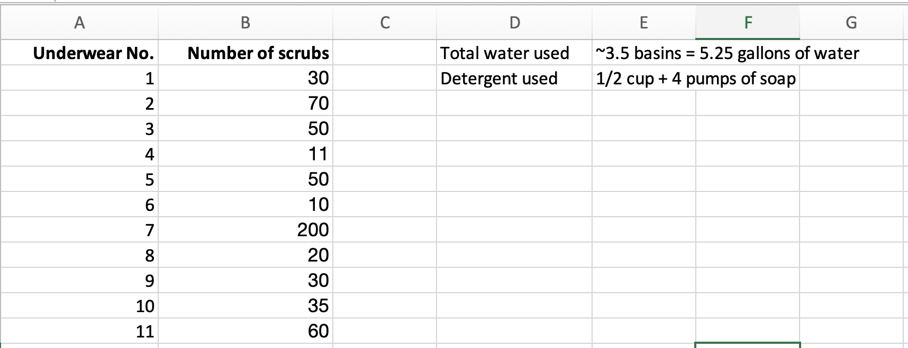

Our open-source, mixed-media performative installation physicalizes Pepi’s data - the number of times in which they have to scrub their underwear stained with period blood in order to get the stains out during their irregular, 11-day-long menstruation. Pepi’s data will be uploaded to a web server, nPoint. This data would then be used in the form of an API in the home page.
Whenever it reaches the specific time and date as shown in Pepi’s dataset, a robotic arm starts moving and scrubbing the respective number of times. There will be a live stream of this robotic arm over the course of 11 days- the same number of days in which Pepi had to scrub their underwear for during one menstrual cycle.
After 11 days, when Pepi’s data is visualized, we will open up the database for other people’s experiences with scrubbing their blood stained underwear. People will be able to enter their data on the n-point database.
Our website can then access this data and start visualizing the experiences of menstruating people from all over the world. The code, hardware and software instructions are ready, available and accessible below for whoever wishes to create their own version of this project. We hope that by making this project accessible to the public, more people would be able to be empowered to physicalize and share their own period data as well. This fulfills our goals of highlighting the untold labor that goes into coping with menstruation as well as destigmatizing menstruation.
Link to our github repo here
Link to our research paper for this project here
Data collected by Pepi documenting the number of times they scrubbed their stained underwear over 11 days
Our first robotic arm prototype!